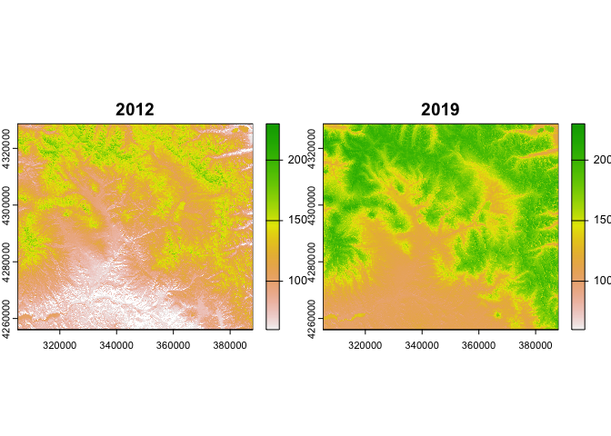

The rSDP package provides a simple interface for discovering, querying, and subsetting data products that are incorporated into the RMBL Spatial Data Platform. The RMBL SDP provides a set of curated, high-resolution, and high-fidelity geospatial datasets for a set of domains in Western Colorado (USA) in the vicinity of Rocky Mountain Biological Laboratory. For more information about the RMBL SDP see here.
SDP data products are provided as geospatial raster datasets in cloud-optimized Geotiff (COG) format. The rSDP package provides functions to access these datasets in cloud storage (Amazon S3) without downloading.
Installation
You can install the latest version of rSDP from GitHub with:
# install.packages("devtools")
devtools::install_github("rmbl-sdp/rSDP")Discovering SDP Data and Metadata
The package provides functions sdp_get_catalog(), and sdp_get_metadata() that download information about what datasets are currently available and what their spatial attributes are.
library(rSDP)
## Gets entries for vegetation data products in the Upper Gunnison (UG) domain.
sdp_cat <- sdp_get_catalog(domains="UG",
types="Vegetation",
deprecated=FALSE,
return_stac=FALSE)
sdp_cat[,1:5]
#> CatalogID Release Type Product Domain
#> 54 R3D013 Release3 Vegetation Understory Cover UG
#> 55 R3D014 Release3 Vegetation Vegetation Canopy Cover UG
#> 56 R3D015 Release3 Vegetation Vegetation Canopy Height UG
#> 57 R3D016 Release3 Vegetation 20th Percentile Canopy Height UG
#> 58 R3D017 Release3 Vegetation 80th Percentile Canopy Height UG
#> 59 R3D018 Release3 Vegetation Basic Landcover UG
#> 60 R3D019 Release3 Vegetation October 2017 NAIP NDVI UG
#> 61 R3D020 Release3 Vegetation Septober 2019 NAIP NDVI UG
#> 73 BM012 Basemaps Vegetation Canopy Structure Basemap UG
#> 74 BM013 Basemaps Vegetation Landcover Basemap UG
## Grabs detailed metadata for a specific dataset.
item_meta <- sdp_get_metadata(catalog_id="R1D001",return_list=TRUE)
## Prints the detailed description.
item_description <- item_meta$qgis$abstract[[1]]
print(item_description)
#> [1] "This map represents estimated stream flowlines from a hydrologically corrected digital elevation model. The lines were derived in GRASS GIS using a multi-direction algorithm that allows channel braiding. Each stream segment is identified by a unique integer. Stream lines were delineated for drainage areas greater than 512000 square meters.\n"Accessing SDP data in the cloud.
The function sdp_get_raster(), creates R representations of cloud-based datasets that can be used for further processing, returning a SpatRaster which can be further manipulated using functions in the terra package.
## Creates a `SpatRaster` object for a dataset.
dem <- sdp_get_raster(catalog_id="R3D009")
terra::plot(dem) Alternatively, you can plot these data on a web map:
Alternatively, you can plot these data on a web map:
terra::plet(dem,tiles="Esri.WorldImagery")Extracting samples of SDP data.
The function sdp_extract_data() extracts samples from datasets at locations represented by points, lines, or polygons.
## Extracts values of an SDP dataset.
elev <- sdp_get_raster(catalog_id="R3D009")
slope <- sdp_get_raster(catalog_id="R3D012")
location_df <- data.frame(SiteName=c("Roaring Judy","Gothic","Galena Lake"),
Lat=c(38.716995,38.958446,39.021644),
Lon=c(-106.853186,-106.988934,-107.072569))
location_sv <- terra::vect(location_df,geom=c("Lon","Lat"),crs="EPSG:4327")
dem_sample <- sdp_extract_data(raster=elev,locations=location_sv)
#> [1] "Re-projecting locations to coordinate system of the raster."
#> [1] "Extracting data at 3 locations for 1 raster layers."
#> [1] "Extraction complete."
slope_sample <- sdp_extract_data(raster=slope,locations=dem_sample)
#> [1] "Extracting data at 3 locations for 1 raster layers."
#> [1] "Extraction complete."
plot(slope_sample$UG_dem_3m_v1,slope_sample$UG_dem_slope_1m_v1,xlab="Elevation (m).",
ylab="Slope (degrees)")With line or polygon locations sdp_extract_data() summarizes raster values by line or polygon. The default method computes the mean value for each polygon, but you can also specify other summary functions using the sum_fun argument.
slope <- sdp_get_raster(catalog_id="R3D012")
location_poly <- data.frame(SiteName=c("Wet","Conifer","Rocky"),
WKT=c("POLYGON ((327651 4313638,327620 4313727,327693 4313759, 327651 4313638))",
"POLYGON ((327340 4314059,327450 4314026,327418 4313970,327340 4314059))",
"POLYGON ((328193 4314314,328285 4314274,328244 4314223, 328193 4314314))"))
location_poly_sv <- terra::vect(location_poly,geom="WKT",crs="EPSG:32613")
slope_site_mean <- sdp_extract_data(raster=slope,locations=location_poly_sv)
#> [1] "Extracting data at 3 locations for 1 raster layers."
#> [1] "Extraction complete."
slope_site_sd <- sdp_extract_data(raster=slope,locations=slope_site_mean,
sum_fun=sd,bind=TRUE)
#> [1] "Extracting data at 3 locations for 1 raster layers."
#> [1] "Extraction complete."
names(slope_site_sd) <- c("SiteName","ID","Slope_mean","ID2","Slope_sd")
plot(slope_site_sd$Slope_mean,slope_site_sd$Slope_sd,xlab="Slope Mean (deg.)",
ylab="Slope Standard Deviation",pch="")
text(slope_site_sd$Slope_mean,slope_site_sd$Slope_sd,labels=slope_site_sd$SiteName) You can also return all the cell values intersecting each line or polygon by specifying
You can also return all the cell values intersecting each line or polygon by specifying sum_fun=NULL. Passing the argument exact=TRUE with polygon features returns the proportion of each raster cell included in the polygon (useful for computing area-weighted means.)
slope_allcells <- sdp_extract_data(raster=slope,locations=slope_site_mean,
sum_fun=NULL,exact=TRUE,bind=FALSE)
#> [1] "Extracting data at 3 locations for 1 raster layers."
#> [1] "Extraction complete."
head(slope_allcells)
#> ID UG_dem_slope_1m_v1 fraction
#> 1 1 4.609455 0.01733949
#> 2 1 6.018766 0.34246161
#> 3 1 9.753592 0.60725906
#> 4 1 3.104769 0.06934668
#> 5 1 6.362072 0.46575703
#> 6 1 6.617933 0.88677505Working with raster time-series
The sdp_get_raster() and sdp_extract_data() functions also provide some convenience features for subsetting time-series datasets by day or year.
## Connects to rasters from a temporal subset of daily data.
tmax <- sdp_get_raster("R4D004",date_start=as.Date("2011-12-01"),date_end=as.Date("2011-12-30"))
#> [1] "Returning dataset with 30 layers, be patient..."
## Further subsets when extracting data
tmax_sample <- sdp_extract_data(tmax,location_sv,date_start=as.Date("2011-12-01"),date_end=as.Date("2011-12-20"))
#> [1] "Re-projecting locations to coordinate system of the raster."
#> [1] "Extracting data at 3 locations for 20 raster layers."
#> [1] "Extraction complete."
tmax_df <- as.data.frame(tmax_sample)
dates <- as.Date(names(tmax_df)[3:ncol(tmax_sample)])
sites <- tmax_df$SiteName
##Plots the result
plot(dates,tmax_df[1,3:ncol(tmax_sample)],type="l",ylab="Tmax (C)",ylim=c(-15,7))
points(dates,tmax_df[2,3:ncol(tmax_sample)],type="l",col=3)
points(dates,tmax_df[3,3:ncol(tmax_sample)],type="l",col=4)
legend("bottomright", legend=sites,col=c(1,3,4),bty="n",lty=1)
##Retrieving rasters from a subset of years.
snow_yearly <- sdp_get_raster("R4D001",years=c(2012,2019))
#> [1] "Returning dataset with 2 layers be patient..."
terra::plot(snow_yearly,range=c(60,230))
Extracting data from large time-series datasets.
For extracting subsets of large datasets, it’s sometimes a good idea to loop over small subsets rather than extracting from a single large raster object with many (sometimes hundreds) of layers.
## Extracts with a single call.
start1 <- Sys.time()
tmax1 <- sdp_get_raster("R4D004",date_start=as.Date("2004-10-01"),date_end=as.Date("2004-10-31"))
#> [1] "Returning dataset with 31 layers, be patient..."
tmax_extr1 <- sdp_extract_data(tmax1,location_sv,verbose=FALSE)
elapsed1 <- Sys.time() - start1
## Loops over layers (different subset to avoid cacheing).
start2 <- Sys.time()
tmax2 <- sdp_get_raster("R4D004",date_start=as.Date("2005-10-01"),date_end=as.Date("2005-10-31"),
verbose=FALSE)
locations_proj <- terra:::project(location_sv,"EPSG:32613")
extr_list <- list()
for(i in 1:terra::nlyr(tmax2)){
extr_dat <- sdp_extract_data(tmax2[[i]],locations_proj,verbose=FALSE)[,3]
extr_list[[i]] <- extr_dat
}
tmax_extr2 <- do.call(cbind,extr_list)
elapsed2 <- Sys.time() - start2
## Loops over creating the raster object itself.
## This is slower single threaded, but can be more easily made parallel.
start3 <- Sys.time()
days <- seq(as.Date("2006-10-01"),as.Date("2006-10-31"),by="day")
extr_list3 <- list()
for(i in 1:length(days)){
tmax3 <- sdp_get_raster("R4D004",date_start=days[i],date_end=days[i],verbose=FALSE)
extr_dat <- sdp_extract_data(tmax3,locations_proj,verbose=FALSE)[,3]
extr_list3[[i]] <- extr_dat
}
tmax_extr3 <- do.call(cbind,extr_list3)
elapsed3 <- Sys.time() - start3
## Parallel extraction via foreach.
library(foreach)
#> Warning: package 'foreach' was built under R version 4.1.2
library(doParallel)
#> Warning: package 'doParallel' was built under R version 4.1.2
#> Loading required package: iterators
#> Warning: package 'iterators' was built under R version 4.1.2
#> Loading required package: parallel
library(sf)
#> Warning: package 'sf' was built under R version 4.1.2
#> Linking to GEOS 3.10.2, GDAL 3.4.2, PROJ 8.2.1; sf_use_s2() is TRUE
## Can't pass SpatVector or SpatRaster objects via Foreach, so convert to sf.
locations_sf <- st_as_sf(location_sv)
start4 <- Sys.time()
cl <- parallel::makeCluster(4)
doParallel::registerDoParallel(cl)
days <- seq(as.Date("2007-10-01"),as.Date("2007-10-31"),by="day")
extr_list4 <- foreach::foreach(i=1:length(days),.packages=c("sf","terra","rSDP")) %dopar% {
#devtools::load_all() ## During package development.
tmax4 <- rSDP::sdp_get_raster("R4D004",date_start=days[i],date_end=days[i],verbose=FALSE)
extr_dat <- rSDP::sdp_extract_data(tmax4,vect(locations_sf),verbose=FALSE,
return_spatvector=FALSE)[,3]
(extr_dat)
}
parallel::stopCluster(cl)
tmax_extr4 <- do.call(cbind,extr_list4)
elapsed4 <- Sys.time() - start4
##Collects timings.
timings <- data.frame(approach=c("Single Call","Looping sdp_extract_data()","Looping over sdp_get_raster()","Foreach"),
timing=c(elapsed1,elapsed2,elapsed3,elapsed4))
timings
#> approach timing
#> 1 Single Call 22.84320 secs
#> 2 Looping sdp_extract_data() 36.86560 secs
#> 3 Looping over sdp_get_raster() 34.61781 secs
#> 4 Foreach 27.65680 secs